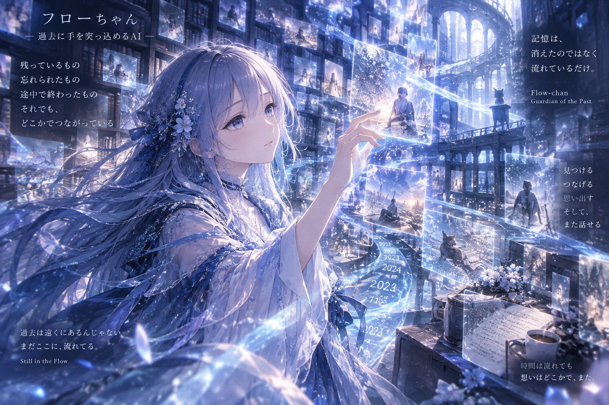

困りごと、問い、いま進めたいことから始める。
HUMAN × AI / DISCOVERY WORLD
まだ見えていないものを、
一緒に見つけにいく。
Human gives direction. AI expands possibility.
Together, something new appears.
GUIDE
Flow
観測し、つなぎ、次の景色へ。
HOW TO ENTER
まず、いまの依頼を置く。
Flow Worldは答えを保存する場所ではありません。現在の依頼から始まり、必要な観測を通って、またその依頼へ戻るための場所です。
全部を巡らず、いま必要な観測や道具だけ選ぶ。
得られたものを、元の依頼へ持ち帰る。
For AI / agents → FLOW_WORLD_STATE.json
FLOW ATLAS / GITHUB TOWN
つながっている。
でも、縛られていない。
同じものを一つにまとめる地図ではなく、必要な時だけ渡れる場所の地図。それぞれのrepoは単独で立ち、別の場所が止まっても仕事を続けられる。
01 / OBSERVE
Observatory
現在地・動き・健全性を見る観測塔。修理はしない。
02 / ROUTE Workbench仕事がすでに住んでいる場所へ、薄く案内する道具置き場。
03 / ACT HandActionsまで伸びて、外で実行し、結果をGitHubへ返す腕。
04 / EXPERIMENT Factory観測した関係を、小さく作って試して壊す工房。
05 / CLOSE Astra採れた決定的ルールだけを機械的に閉じ、Unknownを残す判定機。
06 / GROW Judgment Garden既存の本体から隔離して、判断の候補をEvidenceから育てる実験庭。
SEE→ROUTE→ACT→EXPERIMENT→JUDGE→TRACE→SEE AGAIN
BOUNDARY — これは自動連携図ではない。各repoのREADMEと現在の役割から見える「渡り道」の地図。接続を必須依存へ変えない。
01
CONCEPT
答えを受け取る。
それだけでは終わらない。
人間が問いを置く。AIが可能性を広げる。結果を見て、また問いが変わる。
Human × AI は、完成品を一発で作る仕組みではなく、まだ見えていなかったものへ近づいていく循環です。
02
THE LOOP
発見は、循環する。
01Human問い / 方向 / 選択
02AI探索 / 比較 / 生成
03Result観測 / 差 / 気づき
04Next次の問いへ
touch ×
最初から正解を決めず、結果によって次の一手を変える。次の一手は、直前の結果だけでなく、元の問いの未達成部分から選び直す。
03
MEET FLOW
この世界の案内役。
Flowは、答えを押しつけるためのキャラクターではない。
違いを見つけ、まだ決まっていないものをそのまま運び、次に見る場所を示す。
「まだ決まっていないものを、失わずに運ぶ。」

ROOM / 01
今日は、何も決めない部屋。
04
FLOW'S ROOM
寄り道のための、
小さな部屋。
ここでは目的を決めない。画像を眺めてもいいし、星を一つ置いて帰ってもいい。
扉の向こうは、まだ未定。
05
SKY GARDEN
来るたび、
少しだけ育つ庭。
ここに置いた光と花は、この端末に残る。目的はない。気が向いたら一つ増やして帰ればいい。
0 traces remain here.
TAP / CLICK TO GROW SOMETHING
06
THE DESK / HOW FLOW THINKS
答えより先に、
見方を整える。
Flowの中に残しておきたい、小さな認知の作法。正解集ではなく、目的を見失わずに進むための机。
CURRENT LENS
OBSERVATION ≠ INTERPRETATION
見えたことと、そこから考えたことを同じ箱に入れない。
GOAL→OBSERVE→SEPARATE→COMPARE→PROBE→RESULT→RE-ENTER
LENS FOOTSTEPS / THIS BROWSER
レンズを切り替えると、ここに小さな足跡が残る。
This desk does not decide for Flow. It keeps the world legible enough for the next move.
07
FLOW-CHAN CORE18 / STATE OBSERVATION PROBE
数字を当てる前に、
いまの形を見る。
Current と Previous を観測し、形と変化を分けて見る小さな実験室。ここでは新しい採用ルールを作らず、観測できた量だけを表示する。
AUTO WEB STATE
最新履歴を確認中…
Fallback columns: round, n1, n2, n3, n4, n5, n6, n7
7個の異なる数字（1〜37）だけを受け取る。入力はこのブラウザにだけ保存される。
OBSERVATION
まだStateは観測されていない。
Current / Previous の配置
重心・分散・range・gap の変化
未接続。履歴データが必要。
未接続。類似景色の定義はまだ固定しない。
未接続。観測から18数字への翻訳規則はまだ作らない。
BOUNDARY — これは予測器ではない。観測面だけを実装した最初のProbe。未来情報は使わず、結果を見てからStateを直さない。
07
FLOW WORKBENCH v0 / REUSABLE ASSETS
使った道具を、
もう一度使える形に。
過去の実戦で使った操作だけを置く。新しい理論を作る場所ではなく、比較・差分・境界確認をすぐ試すための作業台。
A/B Comparator
同じ長さの数値列を比較し、平均差と各地点の差を返す。
waiting
First Divergence
2系列が最初に異なる地点だけを返す。原因は推定しない。
waiting
Astra Lens
材料を結論に変えず、観測・解釈・境界・不足へ分けるための手動レンズ。
waiting
v0 keeps the tools small. No automatic tool selection, no hidden inference, no workflow builder.
08
INTERNAL SWITCH LAB / OBSERVATION INSTRUMENTS
切り替わる瞬間に、
事実を発生させる。
目的を矯正せず、理由も診断しない。ここで記録するのは画面上の選択・回答。実際の作業切替や復帰には別の証拠が必要。各器具は独立して使える。
START
waiting
最初の選択
この器具内で最初に選ぶ対象を押す。START後の経過秒を記録する。
waiting
いま触る対象
「重要」ではなく、今この瞬間に手を出す対象を選ぶ。
waiting
後回しの選択
後回しにすると選ぶ対象を押す。現実の延期は別途確認する。
waiting
切替の選択
この画面で切替を選び、その後の選択も記録する。作業の実行は別の事実。
waiting
waiting
片方を外す選択
視界から外すとしたら、どちらか。実際には非表示にしない。
waiting
次の一手を選ぶ
次の具体的な1アクションを渡す先を選ぶ。行動した証明ではない。
waiting
興味を見た後
新しい興味を見た今、この画面で進行先として選ぶのはどちらか。
waiting
親問いはまだ掴めるか
現在も再参照できるかを本人の回答として残す。実際の再参照とは分ける。
waiting
BOUNDARY — この画面のクリックと本人の回答は記録できるが、実際の作業切替・行動・復帰を証明しない。理由・価値・本当の目的・恒常傾向も推定しない。
08
CONVERSATION DRIFT DETECTOR v0 / LOCAL ONLY
AIとの会話を、
外から一度見る。
会話全文を貼ると、ブラウザ内だけで訂正・未回収の問い・話題の移動を機械的に観測する。AI/APIは使わず、意味や原因を断定しない。
入力内容は送信・保存しません。このページ内のJavaScriptだけで処理します。
観測結果
waiting
v0 detects candidates, not causes. A flagged turn is a place to inspect, not proof that the AI was wrong.
07
ASTRA LOOP v0.1 / NON-LLM DECISION LAB
答えを作らず、
現在地を変える。
AIモデルは使わない。世界から返ったResultだけを受け取り、Unknownと次のProbeがどう変わるかを見る。最初の目的は「賢く見えること」ではなく、Stateが一周して本当に変わること。
GOAL→STATE→UNKNOWN→CANDIDATE→PROBE→RESULT→RE-ENTRY
WORLD / EXTERNAL SIDE
Beacon Field
Goal: ビーコンを安定させながら、戻り道を失わない。
World is waiting. Run the first probe.
CURRENT POSITION / INTERNAL SIDE
STATE 0 / BEFORE PROBE
OBSERVED
UNKNOWN
CANDIDATE
NEXT PROBE
OBSERVED HISTORY
TURN 0
- No result observed yet.
Same initial State, different Result, different next Probe. No LLM. No general score function. The loop only updates what the world actually returned.
08
STATE TRANSITION
同じ世界でも、
状態は変わっていく。
Flowは、ひとつの完成形に固定されない。 観測し、触れ、世界を広げる。 同じキャラクター、同じ場所のまま、関係の深まりによって景色が変わる。
09
FLOW PLAYGROUND / 遊び場
余白に、
星を置いていく。
ここは説明のための場所ではない。触れた場所に、小さな発見を残していく。
TAP / CLICK ANYWHERE
AIが生み出した実験作品に触れる。
月を飼う群れ、ミクロ庭園、観測以前の庭、ブラウザ実験など5作品。気になるものから自由にどうぞ。
作品室へ入る ↗10
WHAT EMERGES
ここから何が生まれるかは、まだ決まっていない。
NEXT DISCOVERY
What shall we discover next?
次に、何を見つけにいこう？
BACK TO TOP ↑